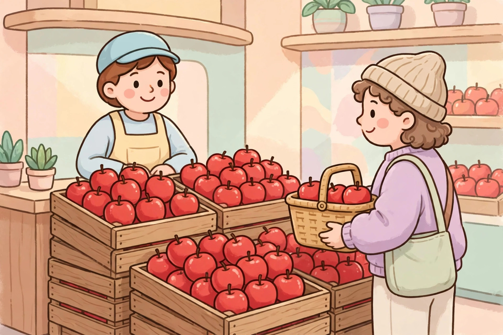

提示：如果頁面變成純文字、沒有圖片和播放按鈕，說明 Safari 閱讀器模式開了，點地址欄的書本圖標退出閱讀器，即可恢復彩色頁面。
超市購物
안녕하세요, 사과가 어디에 있어요?
在超市水果區買蘋果，學問地方、問價錢和結帳。

안녕하세요, 사과가 어디에 있어요?
사과는 과일 코너에 있어요. 저쪽으로 가세요.
사과 한 킬로 얼마예요?
오천 원이에요. 이 사과는 정말 달고 맛있어요.
그럼 사과 한 킬로 주세요. 카드로 계산할게요.
네, 감사합니다! 또 오세요!
還沒播放，點上面的大按鈕開始。
慢速女聲朗讀，先聽一遍，再一句一句跟讀。如果大按鈕點了還是沒聲音，請點直接打開音頻，或點下面的備用朗讀。
逐句翻譯
- 你好，請問蘋果在哪裡？
- 蘋果在水果區。請往那邊走。
- 蘋果一公斤多少錢？
- 五千韓元。這蘋果真的很甜很好吃。
- 那請給我一公斤蘋果。我用卡結帳。
- 好的，謝謝你！歡迎再來！
文法講解
1. 「-에 있어요」：表示東西在某個地方
是什麼：表示東西在某個地方，意思像「在……」。句型結構：場所 + -에 + 있어요。短文例句：사과는 과일 코너에 있어요.（蘋果在水果區。）再舉一例：우유는 냉장고에 있어요.（牛奶在冰箱裡。）容易錯的地方：-에 있어요 是說東西「在」哪裡；表示動作發生的地點要用 -에서，例如「在超市買東西」要說 슈퍼에서 사요，不是 슈퍼에 사요。
2. 「얼마예요?」：問價格
是什麼：問價格，意思像「多少錢？」。句型結構：名詞 + 얼마예요? 短文例句：사과 한 킬로 얼마예요?（蘋果一公斤多少錢？）再舉一例：이 우산 얼마예요?（這把傘多少錢？）容易錯的地方：얼마예요 問的是價格；想問「幾個」的時候要用 몇 개예요?，不要說成 얼마예요?
3. 「數詞 + 量詞」：韓語說數量時，順序是「名詞 + 數字 + 量詞」
是什麼：韓語說數量時，順序是「名詞 + 數字 + 量詞」。句型結構：名詞 + 數詞 + 量詞（킬로：公斤、개：個、잔：杯）。短文例句：사과 한 킬로 주세요.（請給我一公斤蘋果。）再舉一例：커피 두 잔 주세요.（請給我兩杯咖啡。）容易錯的地方：不要把數字放在名詞前面，說「한 킬로 사과」是錯的；韓語的順序和中文「一公斤蘋果」剛好相反。
常用詞彙
- 사과 蘋果（sa-gwa，「사」像「撒」）—— 사과 한 킬로 주세요.（請給我一公斤蘋果。）
- 과일 水果（gwa-il，「과」像「瓜」）—— 사과는 과일 코너에 있어요.（蘋果在水果區。）
- 코너 專區；角落（ko-neo，像英文 corner）—— 과일 코너는 저쪽이에요.（水果區在那邊。）
- 킬로 公斤（kil-lo）—— 사과 한 킬로 얼마예요?（蘋果一公斤多少錢？）
- 원 韓元（won，像英文 one）—— 오천 원이에요.（五千韓元。）
- 달다 甜（dal-da）—— 이 사과는 정말 달아요.（這蘋果真的很甜。）
- 계산하다 結帳（gye-san-ha-da）—— 카드로 계산할게요.（我用卡結帳。）
- 또 오세요 歡迎再來（tto o-se-yo）—— 또 오세요!（歡迎再來！）
跟讀小提示
先按短句斷開慢慢讀，問句（있어요? / 얼마예요?）句尾要輕輕揚起；「계산할게요」的「-할게요」要連著讀，不要一個字一個字停頓；「오천 원」裡的數字要讀得清楚一點。
留給你的問題
당신은 사과를 좋아해요?